El Arkanoid es un divertido juego que exige unos reflejos rápidos. Usa física, colisiones y efectos especiales para retar al jugador.
Para descargar los objetos necesarios para el juego, lo haremos desde este
link. Es un archivo comprimido con 3 imágenes
y 1 sonido. Lo descargaremos y lo descomprimimos en el directorio del alumno.
REVISAR
El juego consiste en que la paleta se moverá con las flechas derecha e izquierda sin que sobrepase los bordes.
La pelota empezara a moverse cuando presionemos la tecla espacio e ira rebotando con la paleta, los bloques y
los bordes. Tendremos 3 pelotas (o vidas) disponibles para poder jugar. Solo podra salir otra pelota cuando
la anterior haya salido de la escena.
Los bloques tendrán 2 "vidas". La primera vez que le toque la pelota cambiara de color y la segunda vez se
eliminará, puntuando con 1 punto.
El juego terminará cuando ya no tengamos más vidas o cuando hallamos acabado con todos los bloques. En ambas
ocasiones pondremos una entidad con el mensaje "Game Over" o "You Win".
Lo primero que haremos será crear el juego, en este caso, en blanco.
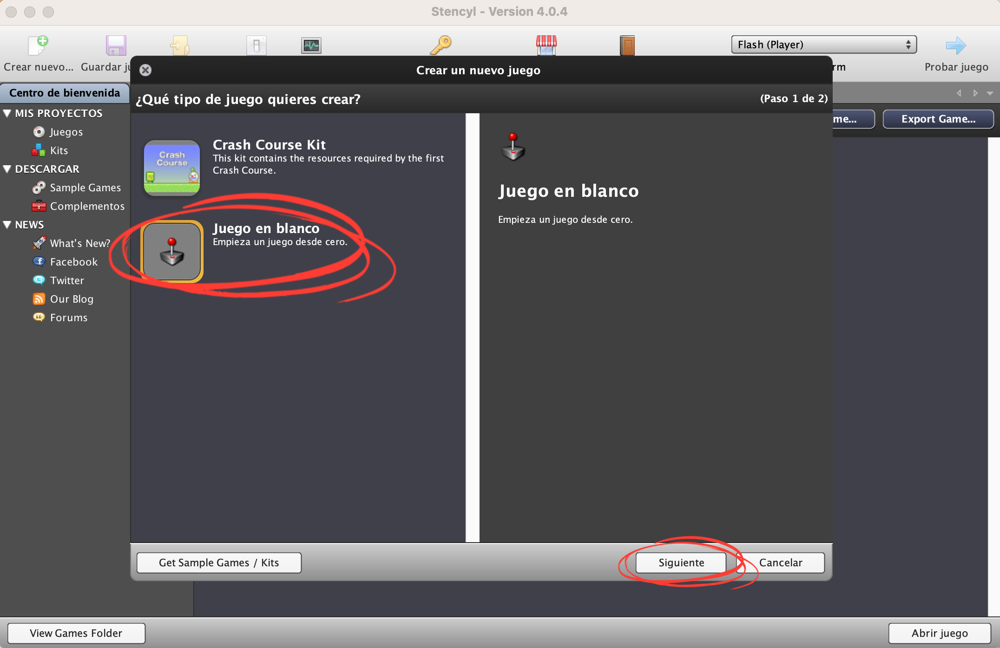
Le damos el nombre "Arkanoid" y le mantenemos las dimensiones que vienen por defecto.
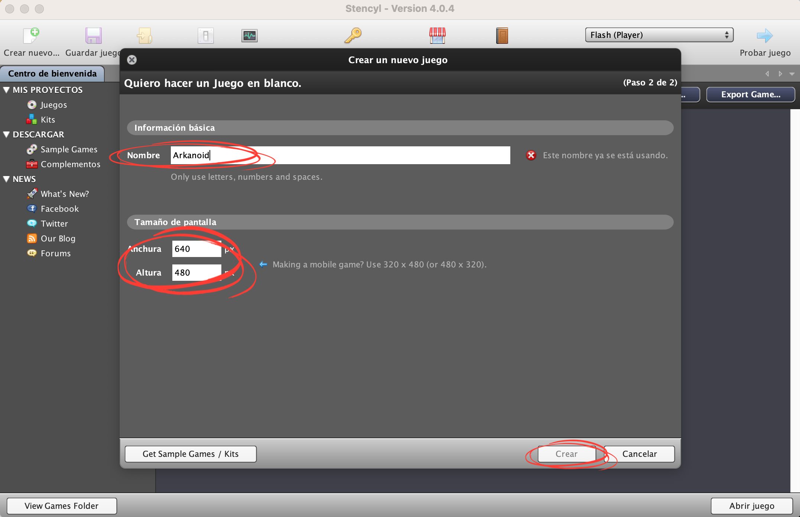
Creamos una escena con la anchura y altura que ponga por defecto. Como vamos a poner tiles en toda la escena,
podemos hacerla con cualquier color de fondo. De momento la dejamos así.
Lo primero que necesitamos para poner en nuestra escena, son las tiles y el fondo. Como no los tenemos, los
añadiremos al juego dentro de "Set de baldosas" y "Fondos".
Para añadir el fondo pinchamos en "Fondos" y pinchamos en crear un fondo. Le damos el nombre "Fondo" y lo
creamos.
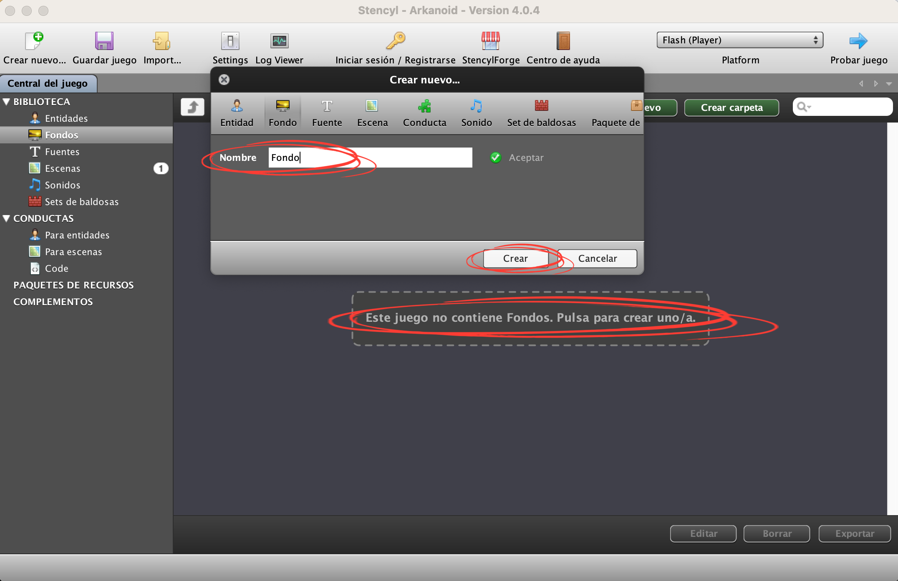
Añadimos un fotograma, poniéndole escala "1x" y le damos a "Elegir imagen". Seleccionamos la imagen "Fondo.png" de los objetos proporcionados, y lo añadimos.
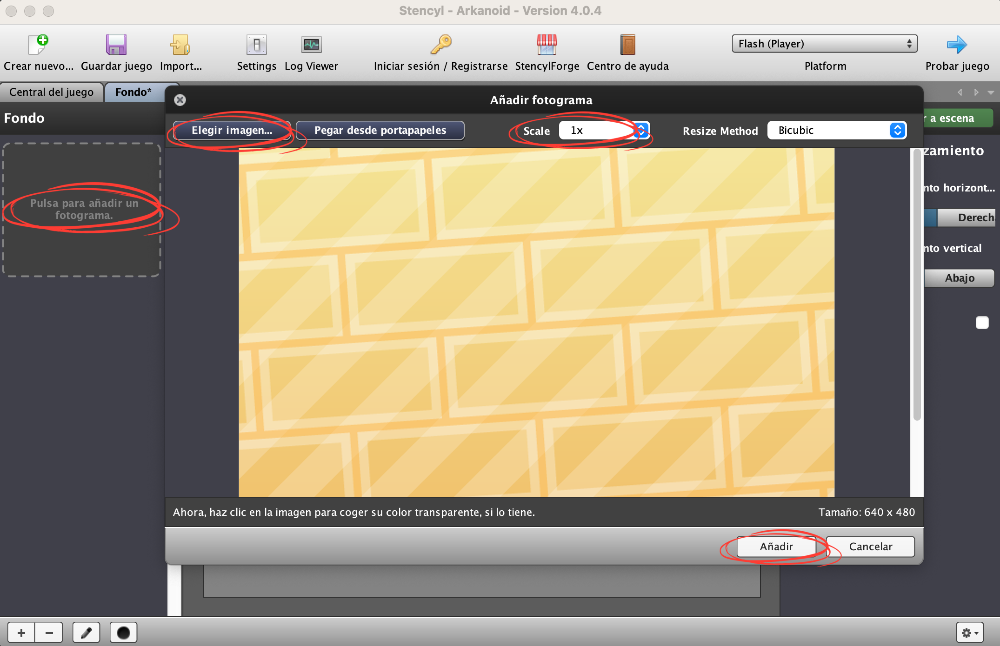
Ahora añadiremos el set de baldosas. Nos vamos a "Set de baldosas" y añadimos un set. Le ponemos el nombre "Baldosas" y lo creamos.
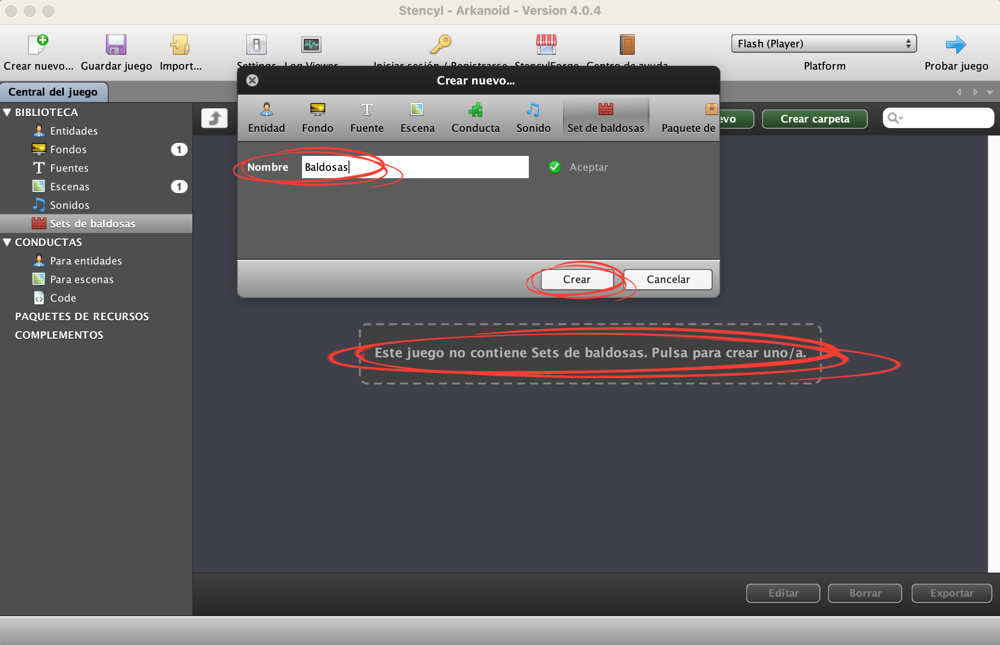
Añadimos una imagen, poniéndole escala "1x" y le damos a "Elegir imagen". Seleccionamos la imagen "Baldosas.png" de los objetos proporcionados, y lo añadimos.
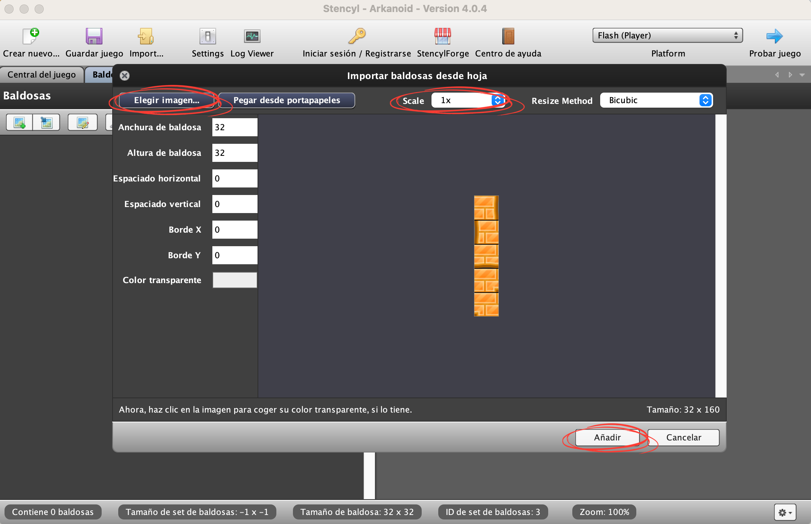
Una vez que tengamos el fondo y las tiles, ya podemos crear nuestro Escenario.
Pondremos el fondo y un borde alrededor de tiles. Debe quedar de esta forma:
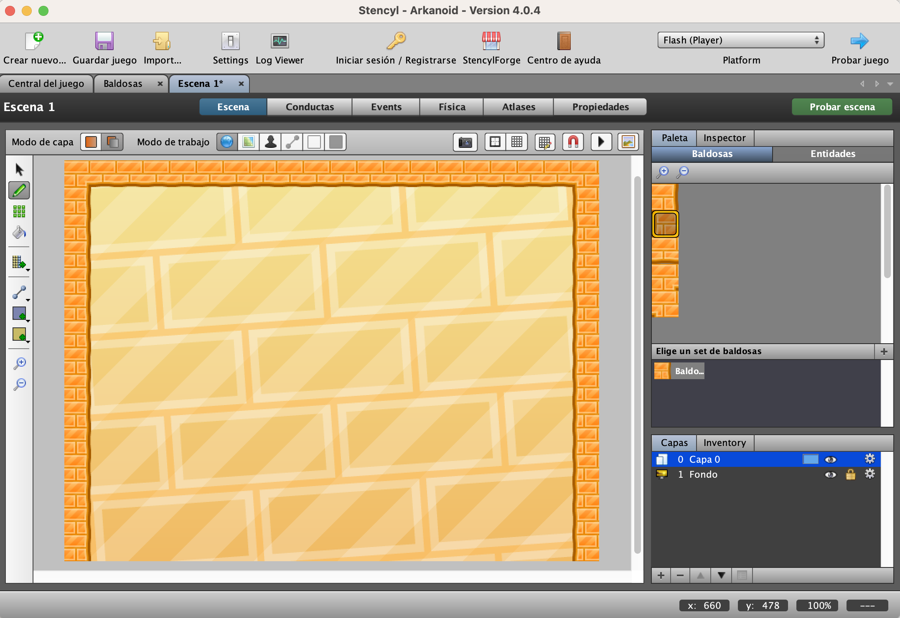
Ahora creamos la entidad "Paleta" como ya vimos anteriormente, con la escala "1x" y con la imagen "Paleta.png"
de los objetos proporcionados.
Iremos a la física de la paleta y le pondremos que no puede rotar y que no se vé afectada por la gravedad.
La colocamos en el centro del escenario, en la parte inferior de nuestra escena.
La escena tendrá 2 capas. La capa 0 será donde dibujaremos el borde con la tiles y la capa 1 que será donde
pondremos el fondo.
Siempre tiene que estar la capa 0 en la primera posición empezando por arriba, ya que es donde dibujaremos y añadiremos nuestras Entidades. Para poder hacerlo tiene que estar seleccionada la capa 0. La capa del fondo debe ser la última por abajo.
Para poder crear los ladrillos dinámicamente, lo primero que haremnos será c rear la entidad "Ladrillo", con
la escala "1x" y con la imagen "Ladrillo.png" de los objetos proporcionados.
Iremos a la física del ladrillo y le pondremos que no puede rotar y que no se vé afectada por la gravedad.
Iremos a la escena de nuevo y crearemos un evento "Basics" de tipo "When Creating".
Necesitaremos varias variables locales de tipo "Número" que serán:
- PosicionX: Será la posición en el eje "X" donde crearemos el ladrillo.
- PosicionY: Será la posición en el eje "Y" donde crearemos el ladrillo.
- PosicionInicialX: Será la posición en el eje "X" donde crearemos el primer ladrillo.
- NumeroLadrillos: Será el número de ladrillos que tendremos que crear por cada fila.
Inicializamos las variables con las posiciones iniciales y "9" con número de ladrillos en la primera fila.
Haremos un bucle repetir con "NumeroLadrillos" como las veces que tenemos que repetirlo (ya que son los
ladrillos que tenemos que crear en cada fila).
Dentro del bucle añadiremos la creación de la entidad "Ladrillo" en las posiciones "PosicionX" y "PosicionY".
Añadimos "64" pixels a la posición en "X" opara crear el siguiente ladrillo y proibamos.
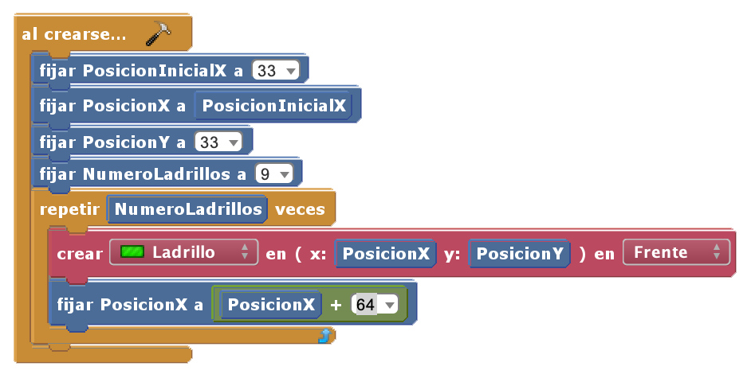
Tiene que quedar una escenario de este estilo.
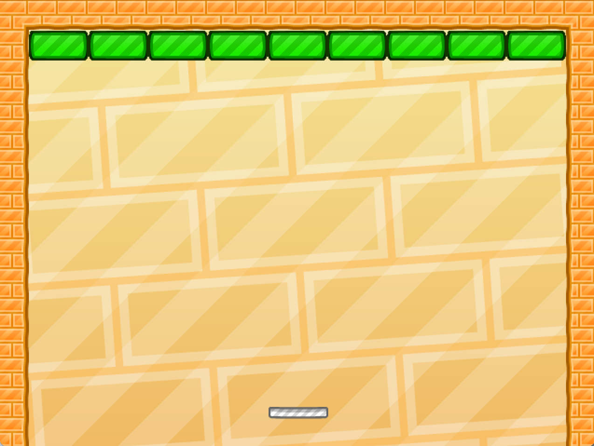
Ahora, para crear la siguiente fila, tendremos que hacer un bucle por encima de la creación de los ladrillos
por fila. Este bucle lo repetiremos el número de filas que queramos hacer. Vamos a probar de momento con 2.
Dentro de este nuevo bucle, pero después del bucle de crear los ladrillos, como se trata de una nueva fila,
sumaremos 33 pixeles a la posición "Y" para que haga la siguiente fila.
Para que la siguiente fila empiece en la mitad del ladrillo de la fila anterior, sumeremos 33 pixeles a la
posición inicial de "X". Y para empezar la nueva fila en esa posición, asignaremos esa posición inicial a la
posición en "X".
Finalmente, restamos 1 al número de ladrillos a crear en la siguiente fila, ya que cada fila tiene un ladrillo
menos que la anterior.
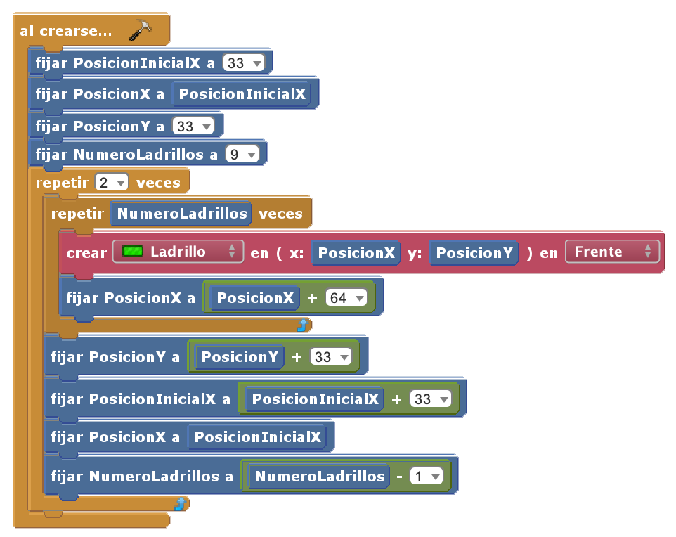
Si probamos, podemos ver las dos filas creadas. Si cambiamos el bucle de las filas, en lugar de 2 repeticiones ponemos 9, hará todas las filas, quedando la escena de la siguiente forma.
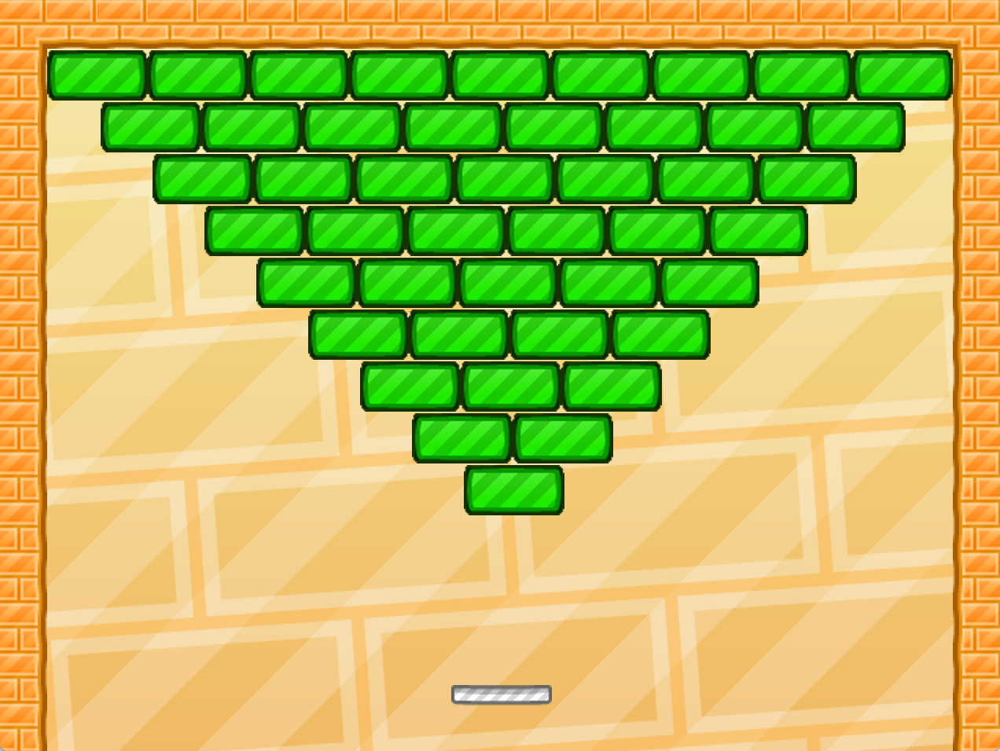
En cuanto a la "Física", pondremos que no se puede empujar, que no puede rotar y que no está afectado por la
gravedad (se pone directamente a "No" cuando marcamos que no se puede empujar).
En las "Propiedades", crearemos un nuevo grupo de colisión al que llamaremos "Ladrillo" y, de momento, no le
pondremos colisión con ningún otro grupo. Lo haremós después.
Crearemos dos variables globales:
- Vidas: Será númerico y tendrá las 3 vidas del juego.
- FinJuego: Será una variable booleana (verdadero/falso) y representará si el juego ha terminado o no.
Vamos a programar el movimiento de la paleta con las flechas derecha e izquierda en un evento "When Updating".
Si pulsamos la flecha derecha vamos a la derecha, lo mismo para la izquierda y en caso contrario, dejamos de
movernos.
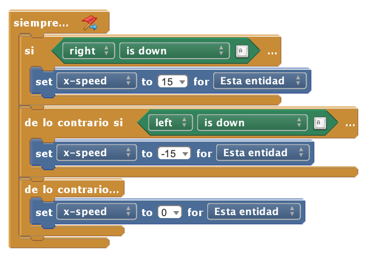
Ahora revisaremos la zona de colisión, para que esté correcta.
En la "Física", pondremos que no puede rotar y que no está afectado por la gravedad.
En cuanto a las "Propiedades", crearemos un nuevo grupo de colisión al que llamaremos "Paleta", para después
hacer que colisione con la pelota. De momento, le ponemos que colisionará con las tiles para que no pase de
los laterales.
Crearemos una entidad a la que llamaremos pelota, con la escala "1x" y la animación con la imagen "Pelota.png"
de los objetos proporcionados.
Iremos a la "Física" de la pelota y le pondremos que no puede rotar y que no se vé afectada por la gravedad.
Y en la "Propiedades, crearemos un nuevo grupo de colisión al que llamaremos "Pelota" y marcaremos las
colisiones con los grupos "Tiles", "Ladrillos" y "Paleta".
Aprovecharemos para cambiar las colisiones de los grupos, "Ladrillos", que colisionará con el grupo "Pelota" y
el grupo "Paleta", que colisionará con el grupo "Tiles (ya lo teníamos) y el grupo "Pelota".
Revisamos que cada entidad tenga su grupo correspondiente asignado.
La pelota la lanzaremos con la tecla "Espacio", con lo que tendremos que crear ese control en "Settings". La
vamos a llamar "Empezar".
Creamos un nuevo evento de Input/Universal/Keyboard y seleccionamos el botón nuevo que hemos creado.
- Usaremos el atributo Vidas para poder lanzar una nueva pelota y otro atributo Esperar que sera booleano que hasta que la pelota anterior no halla
desaparecido de la escena no pueda volver a lanzar otra pelota.
- Deje otro bloque pero no está enganchado para que si quieren podríamos hacer que tuvieramos varias pelotas a la vez.
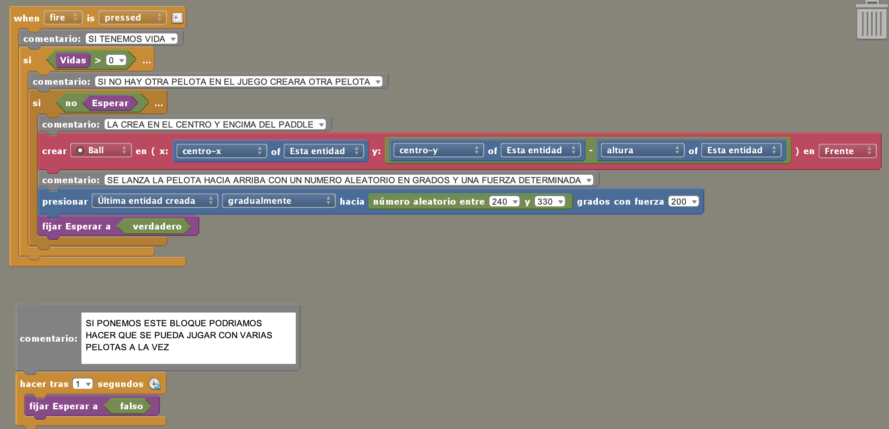
Añadir un nuevo Evento en el Escenario de "Actor Created" para que cuando se elimine una entidad que pertenezca al Grupo de los Bloques se sumen los Puntos.
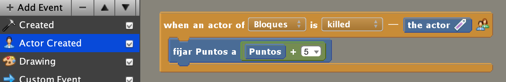
- También tenemos que crear unos Atributos del juego: Esperar y Juego Terminado (ambos Booleanos inicializados a Falso), numero bloques, numero bloques eliminados, Vidas (de tipo númerico) - Al comienzo del juego inicializar numero bloques, numero bloques eliminados y Puntos a 0. Y Vidas a 3.
Y necesitamos otro Evento de Drawing para mostrar los Puntos y las Vidas pero con una fuente que creemos en Central del juego/Fuente.
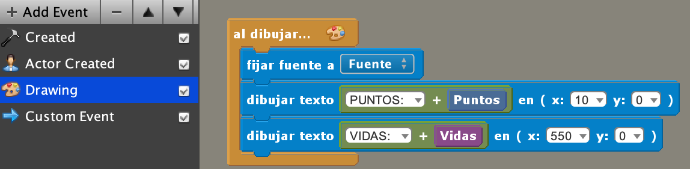
Y pondremos que pertenezca al grupo de los Players. Que en Settings/Grupos de colisión los Players colisionaran con la "Tiles" y con un grupo que creemos que sera "Pelota" que lo añadiremos a nuestra ball.
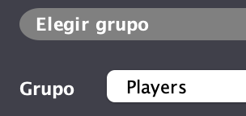
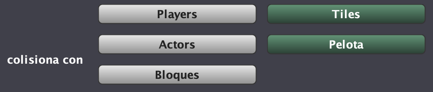
Nos faltaria crear una Conducta que se llame "Lanzar Pelota". Para ello vamos Central del juego/Conductas y como la vamos añadir a una entidad, la conducta será "Para entidades". Creamos la conducta y le ponemos su nombre.
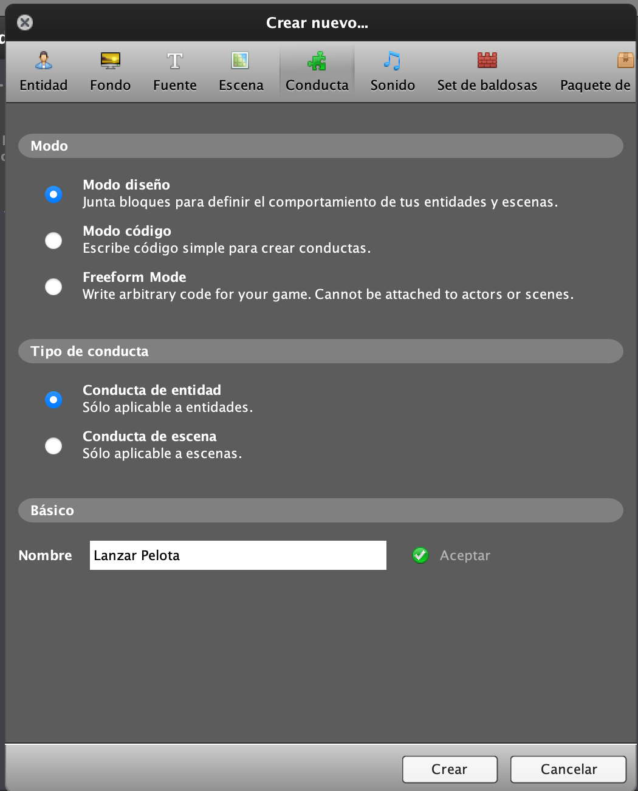
Las conductas las podemos exportar para poder utilizarla en otro proyecto e incluso podemos tener "Atributos" para poder pasar valores como: tipo de
entidades, ángulo....... En nuestro caso estas variables las tengo ocultas porque no las voy a necesitar.
Las podemos encontrar en la parte de la derecha de nuestra conducta. Paleta serán los bloques de programación, Atributos estarán los atributos que
queremos pasar por parámetro. Y en Favoritos podemos tener bloques favoritos asignados.
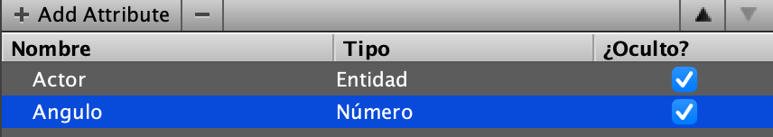
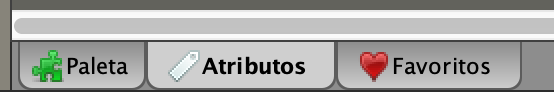
Una vez creada tenemos que añadir la Conducta "Lanzar Pelota" a la entidad "Paddle". Dentro de las Conductas del Paddle hay un botón que aparece a la abajo a la izquierda. Le damos y nos aparece otra ventana para seleccionar la conducta.
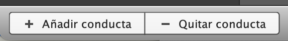
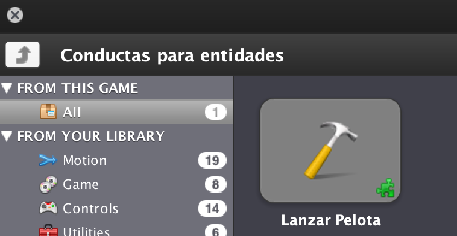
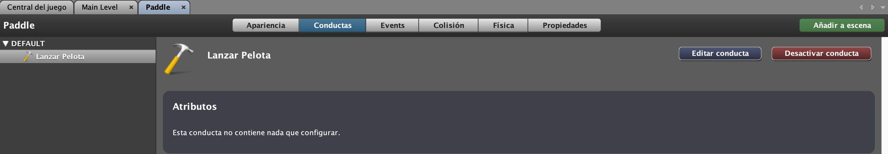
Ahora vamos a programar la conducta "Lanzar Pelota". Damos al botón de "Editar Conducta".
Los Bloques los creamos en el Evento Created de la Escena. Pero aún nos falta hacer algunas cosillas.
Tendrá 2 Eventos:
- Created para inicilizar el atributo "Tocar ladrillo" la inicializamos a 2 ya que solo se pueden tocar 2 veces y se eliminaran.
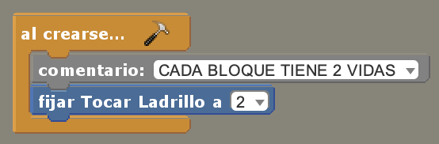
- Actor Type para si el bloque golpea a la pelota y si el atributo "Tocar ladrillo" es 2 cambia su color y reproducir el sonido.
- Y si le vuelve a dar reproducir el sonido, sumamos al atributo "numero bloques eliminados" y si ya no tenemos más bloques mostraremos
la entidad de "You Win". Asi que habra que crear una entidad de You Win pero con la Escala 4.
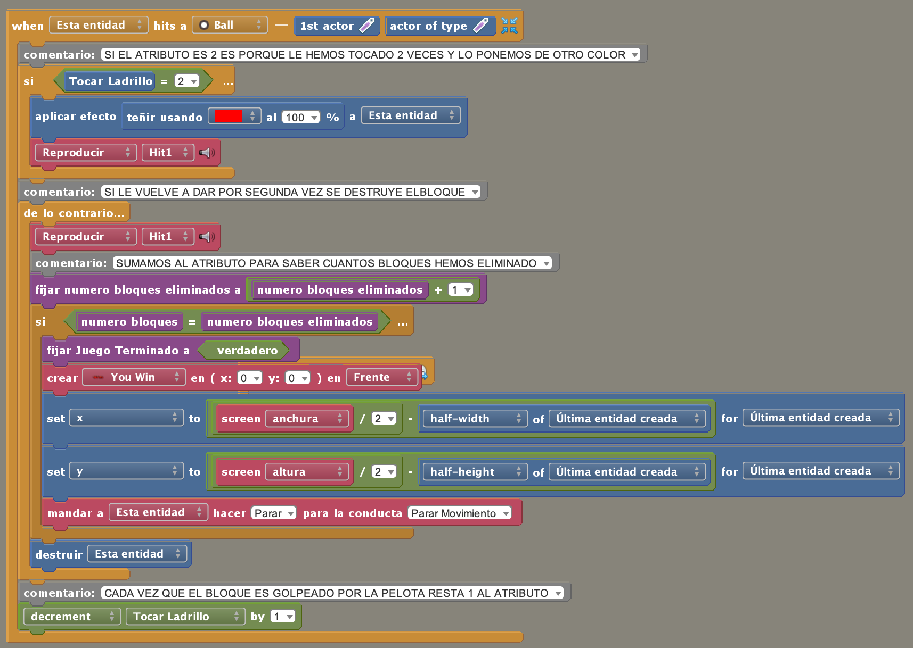
El Bloque también tendrá su colisión.
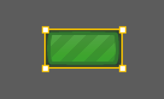
En la solapa de Física NO se podrá mover. El resto lo dejamos como está.
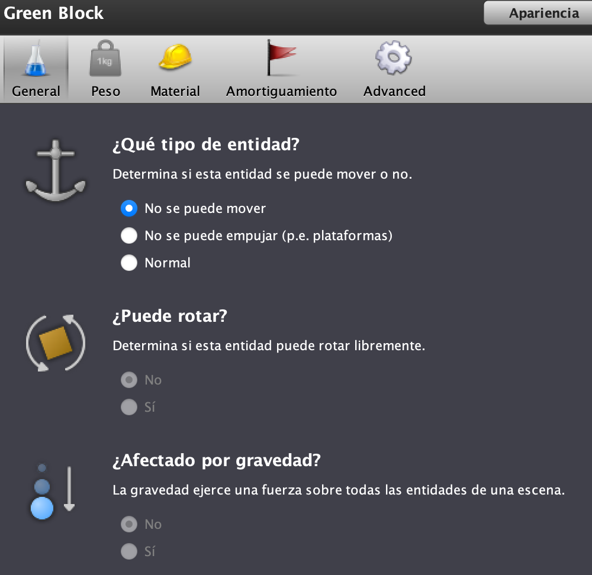
Y en Propiedades ponemos a que grupo de Colisión pertenece. Y en Grupos de Colisión pondremos con que grupo colisiona el Bloque.
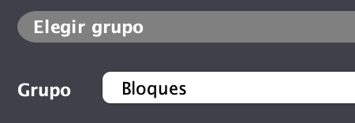
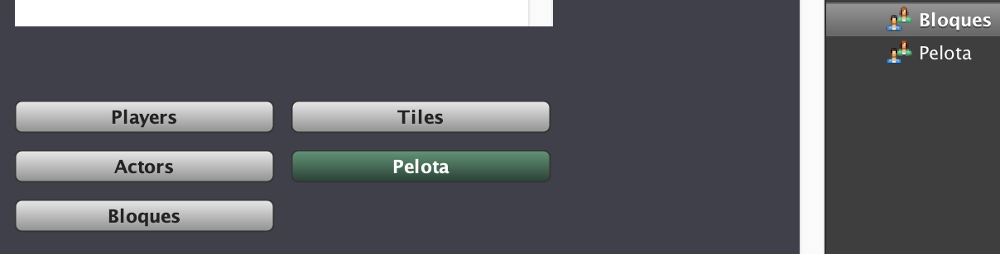
Crear una nueva entidad con Escala 1 y seleccionar la imagen "Ball.png". La Pelota tendrá dos Eventos:
- Updating que comprobara mediante un Atributo del juego si "Juego Terminado" y destruye la entidad para que no se quede rebotando si ha
terminado el juego.
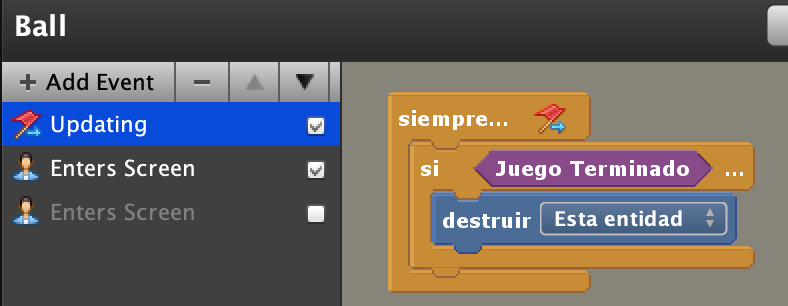
- El Evento que usaremos está en: Actors/Enters or Leaves the Scene or Screen/Actor of Type. Seleccionamos el ball y que se active cuando salga de
la Escena.
Le restaremos una vida y si es 0 centramos la entidad de "Game Over" que la pondremos con una Escala de 4.
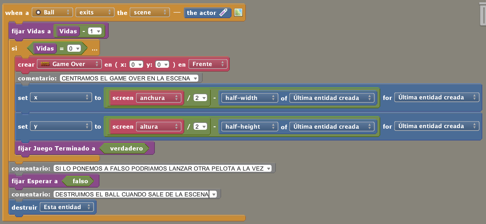
- He puesto otro Evento que no está activo. Lo que hace es volver a reiniciar la escena cuando ya no tenga vidas. (Por si quereis probarlo)
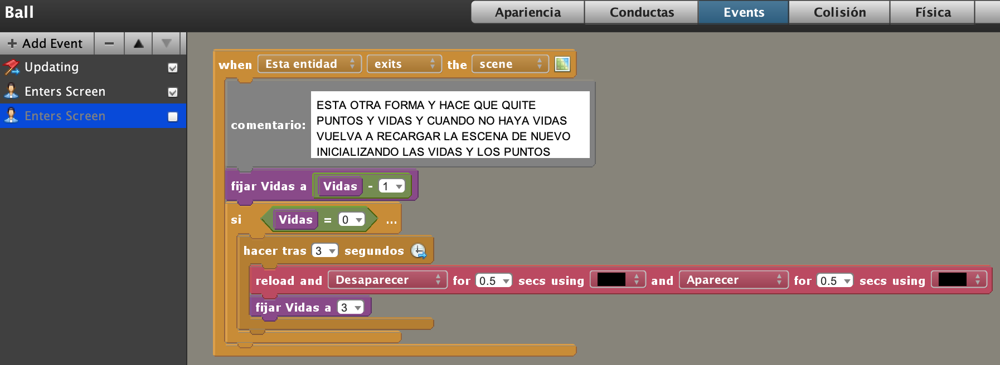
El Ball tiene que tener una colisión.
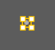
En la solapa de Física tenemos que dejar que se mueva, que no pueda rotar y que no tenga gravedad.
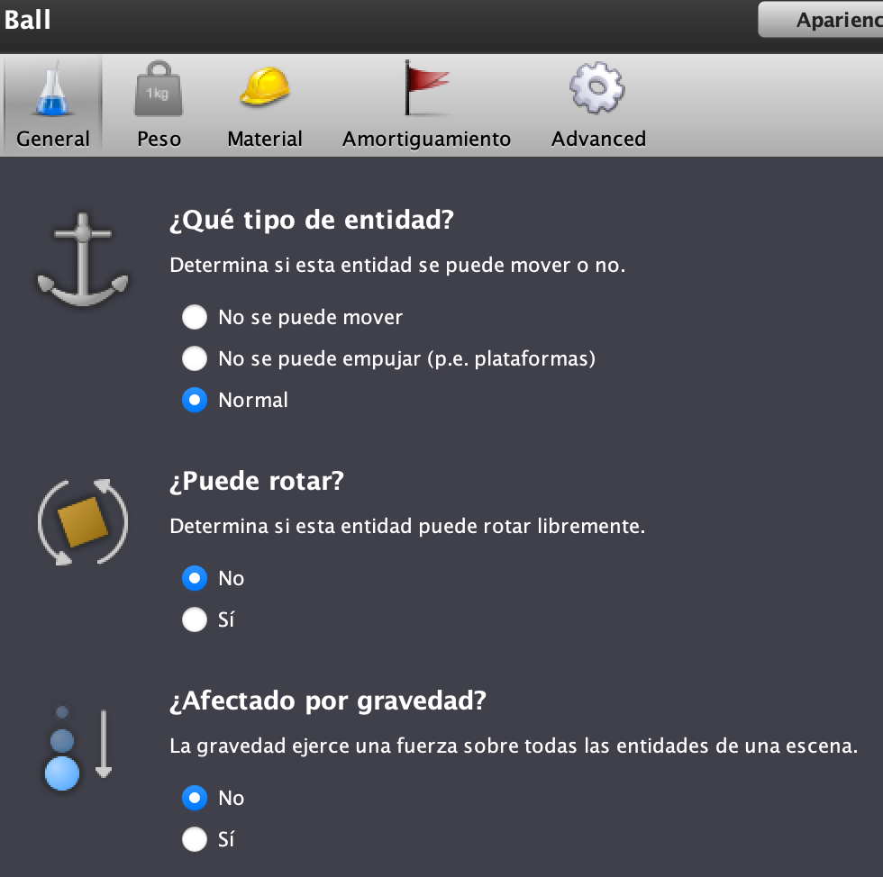
En la solapa de Peso.
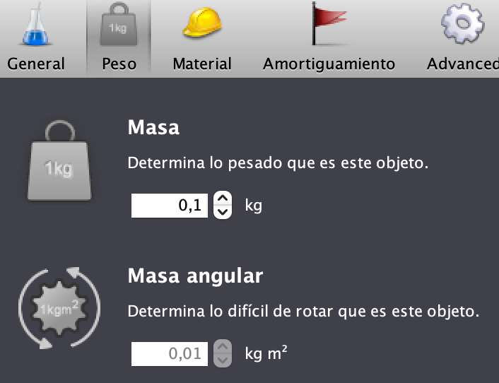
En la solapa de Material. La Elasticidad sera a 1 para que la pelota rebote.
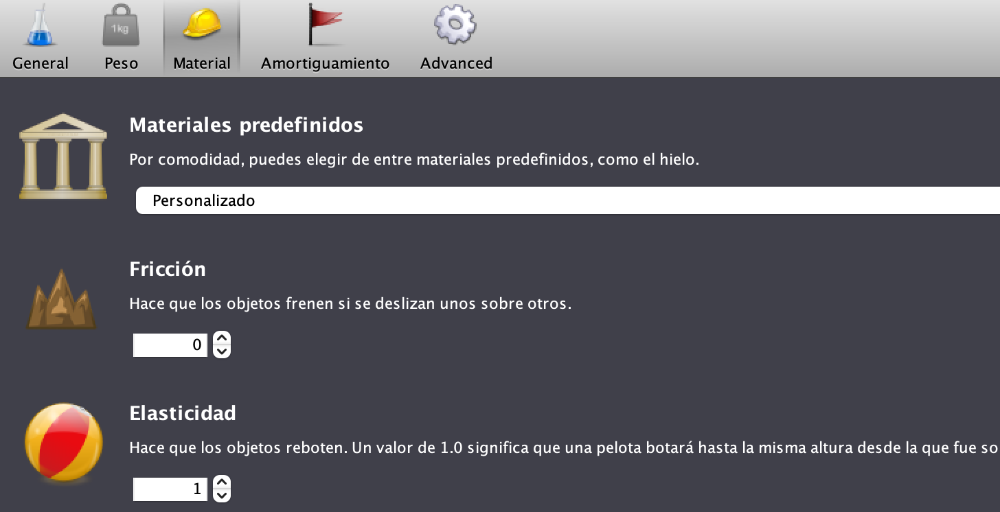
Y en Propiedades ponemos a que grupo de Colisión pertenece. Y en Grupos de Colisión pondremos con que grupo colisiona la Pelota.
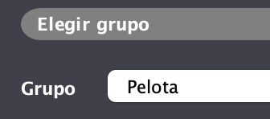
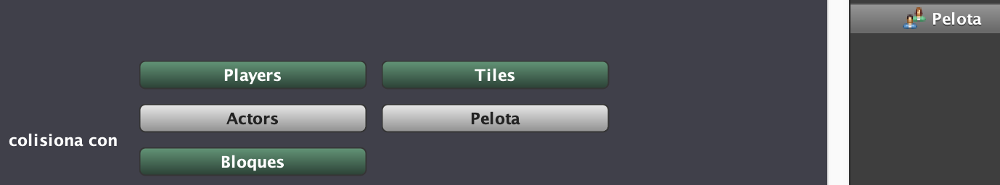
Tenemos que añadir el sonido del golpe de la pelota sobre los bloques. - Vamos a Sonidos y damos al botón.
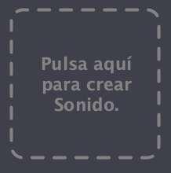
- Y damos de nuevo al botón de "Import MP3". Y seleccionamos el sonido "Hit.mp3". Para poder probarlo vamos donde pone Reproducción y le damos al botón..
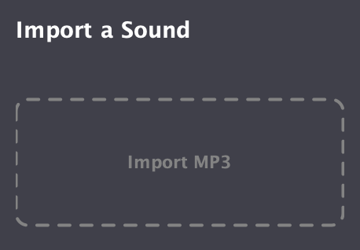
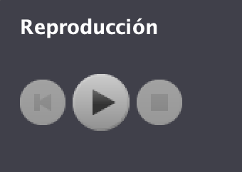
- Que se puedan tener más pelotas a la vez.
- Que cuando ya no tenga vidas que se vuelva a recargar la escena y vuelva a empezar el juego.